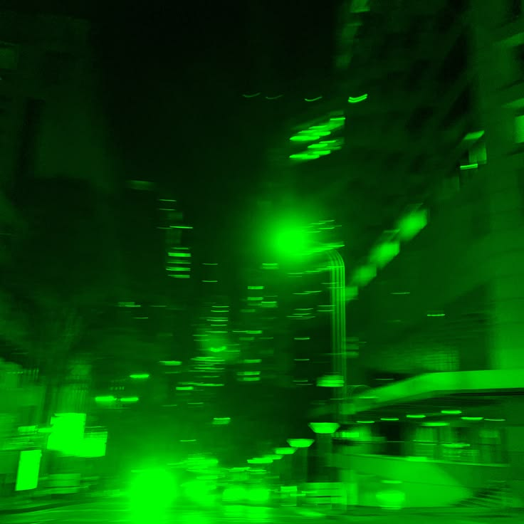

You're getting good at this
Inquiry
I believe life is an open-world game. We currently have access to more knowledge than any other time in history. There is no better moment to be an explorer than the present.

What will you do with what you know?